AED · curso 2
3. Árboles Equilibrados AVL · AED
Escrito por Adrián Quiroga Linares.
Con árboles desbalanceados se pierda le eficiencia de búsqueda, acercándose a la de una lista, es decir O(n) para la búsqueda. SIn embargo, con árboles equilibrados se consigue una eficiencia de O log(n) en la búsqueda, inserción o eliminación.
Aquellos árboles que se mantiene siempre equilibrados debido a constantes reordenaciones se conocen como árboles AVL.
En este tipo de árboles, cada nodo cuenta con un campo llamado factor de equilibrio, que almacena la diferencia entre la altura del subárbol derecho y la altura del subárbol izquierdo para dicho nodo. Un árbol será equilibrado mientras el valor absoluto de todos los factores de carga sea menor que 2.
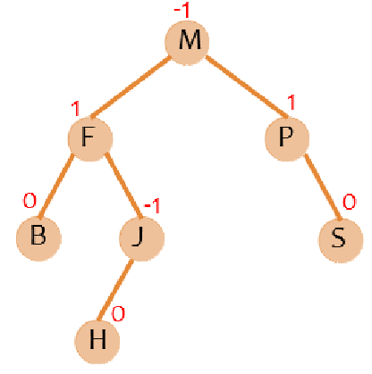
3.1 Inserción
Se pueden dar varios casos en la inserción:
- Si las ramas izquierda y derecha tienen misma altura, da igual donde se inserte, que al insertar solo se producirá un nuevo factor de equilibrio de 1 o -1, con lo que el árbol sigue estando equilibrado.
- Si las ramas izquierda y derecha difieren en su altura en 1 unidad:
a) SI el factor de equilibrio era -1 se inserta por la derecha, o si el factor de equilibrio era 1 se inserta por la izquierda, el nuevo factor de equilibrio pasa a ser 0, por lo que se mejora el equilibrio del árbol y no hay ningún problema.
b) Si el factor de equilibrio era -1 y se inserta por la izquierda, o si el nuevo factor de equilibrio era 1 y se inserta por la derecha, el nuevo factor de equilibrio pasa a ser -2 o 2 respectivamente, desequilibrando el árbol, y siendo necesaria una reesrtucturación.
Reestructuración
Tras una inserción, el nodo insertado pasa a ser un nodo hoja, por lo que su factor de equilibrio es 0. Posteriormente vamos subiendo por el árbol recalculando los factores de equilibrio hasta encontrar uno que cuyo valor absoluto sea 2, a partir del cual habrá que reestructurar el árbol. Así hasta llegar al nodo raíz.
4 tipos de rotaciones, I-> Izquierda D-> Derecha:
-
Rotación simple II: Se produce cuando un nodo tiene factor -2 y su hijo izquierdo factor -1. Se rota hacia la derecha, dejando el nodo con factor -1 como nuevo padre, el nodo con factor -2 como hijo derecho, y el nodo que origino el desequilibrio como hijo izquierdo.
-
Rotación simple DD: Se produce cuando un nodo tiene factor 2 y su hijo derecho es factor -1. Es lo contrario al caso anterior: Rotación a la izquierda, nodo con factor 1 como padre, nodo con factor 2 como hijo izquierdo, y nodo que originó el desequilibrio como hijo derecho.
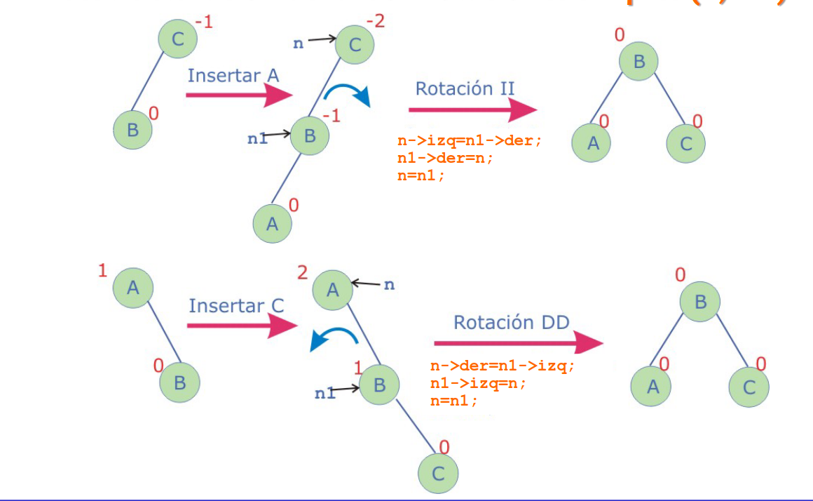
-
Rotación compuesta DI: se produce cuando un nodo tiene factor 2 y su hijo derecho, factor -1. Se rota el hijo con factor a la derecha y se sube el nodo que originó el desequilibrio a su posición, y se tiene una rotación simple DD.
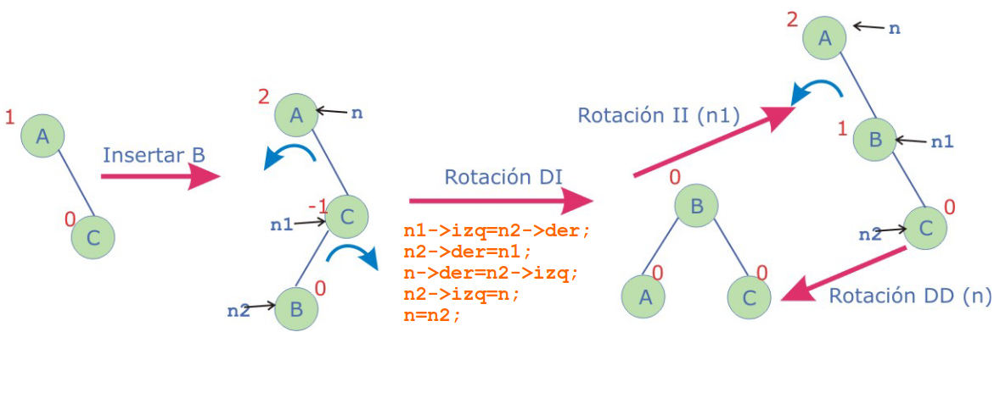
-
Rotación compuesta ID: se produce cuando un nodo tiene factor -2 y su hijo izquierdo, factor 1. Se rota el hijo con factor 1 a la izquierda y se pone el nodo que causó el desequilibrio en su posición, teniendo una rotación simple II
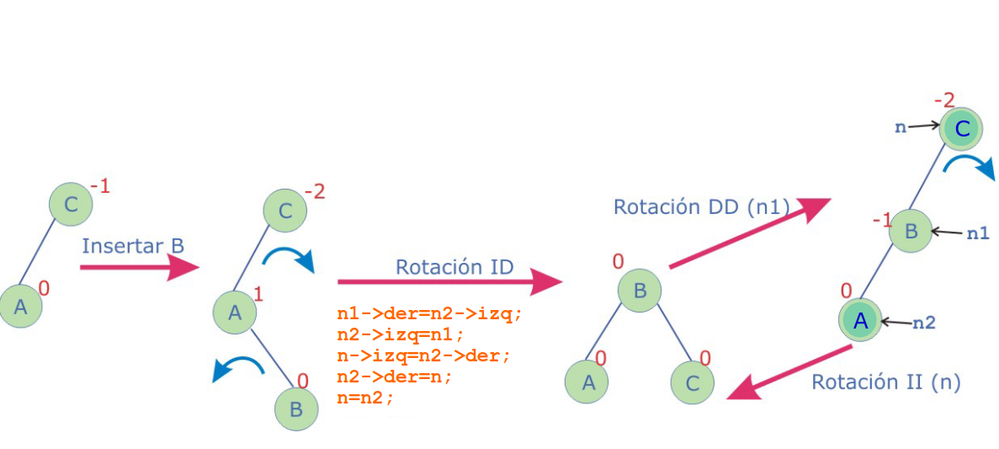
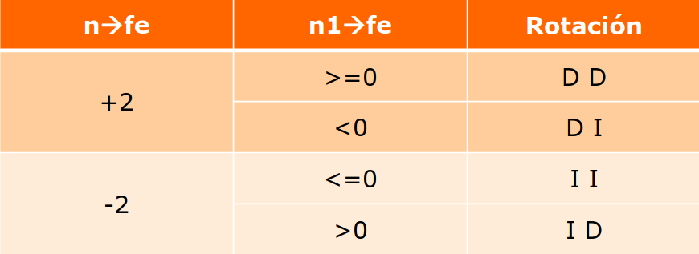
Rotaciones Complicadas
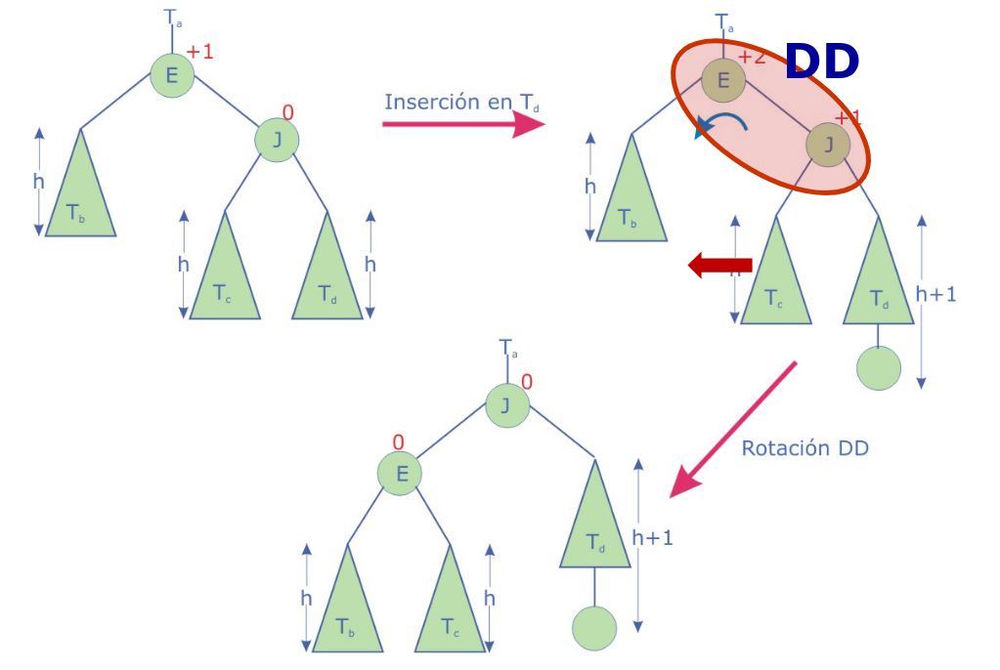
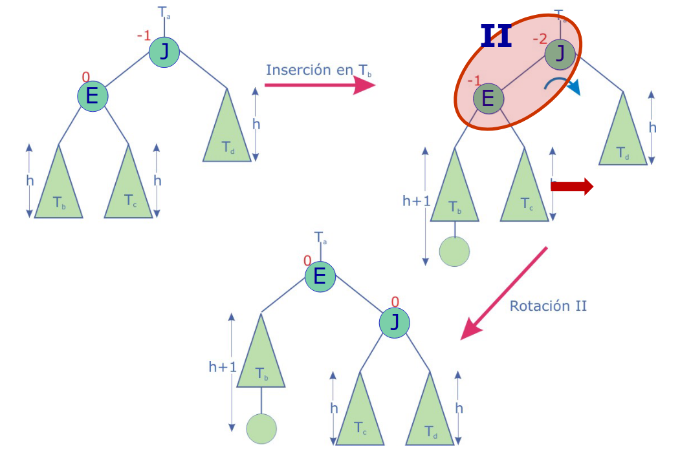
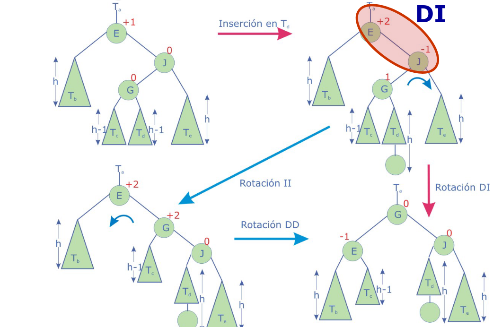
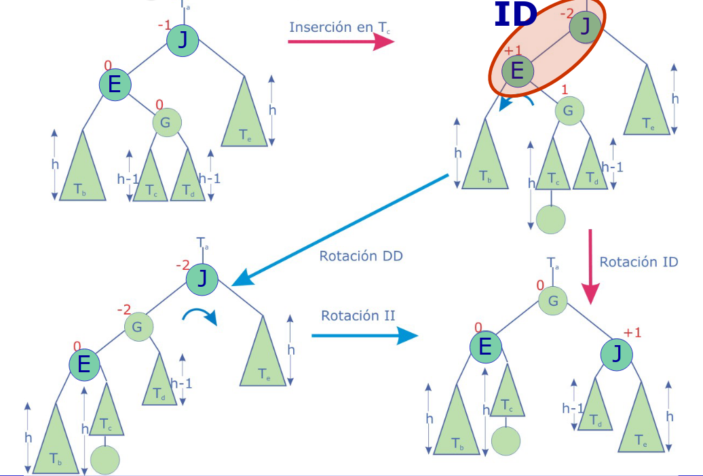
3.2Eliminación
Se sigue el mismo algoritmo que en ABB, pero incluyendo las reestructuraciones necesarias:
- Si el nodo es hoja, se suprime
- Si solo tiene un descendiente, se sustituye por su descendiente y se elimina.
- Si tiene 2 subárboles, se busca el nodo más a la derecha del subárbol derecho, o el nodo más a la izquierda del subárbol derecho, se sustituye, se elimina y se comprueba si hace falta reestructurar.
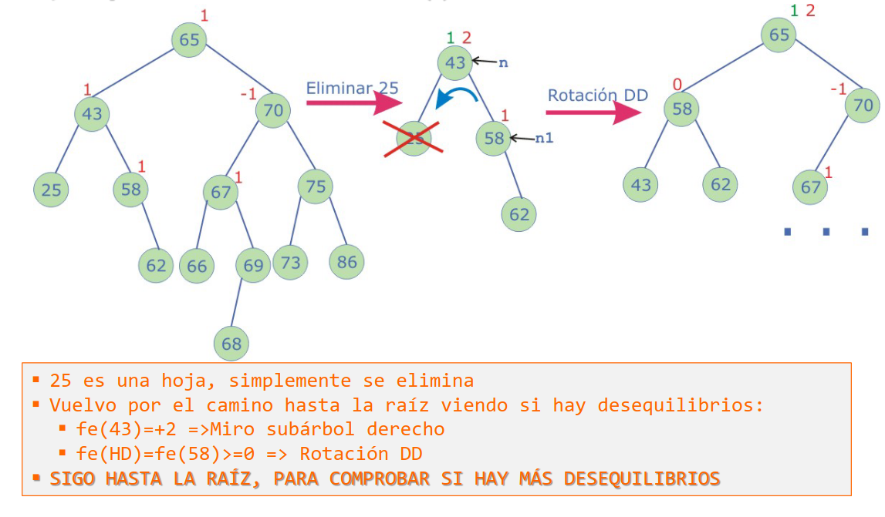
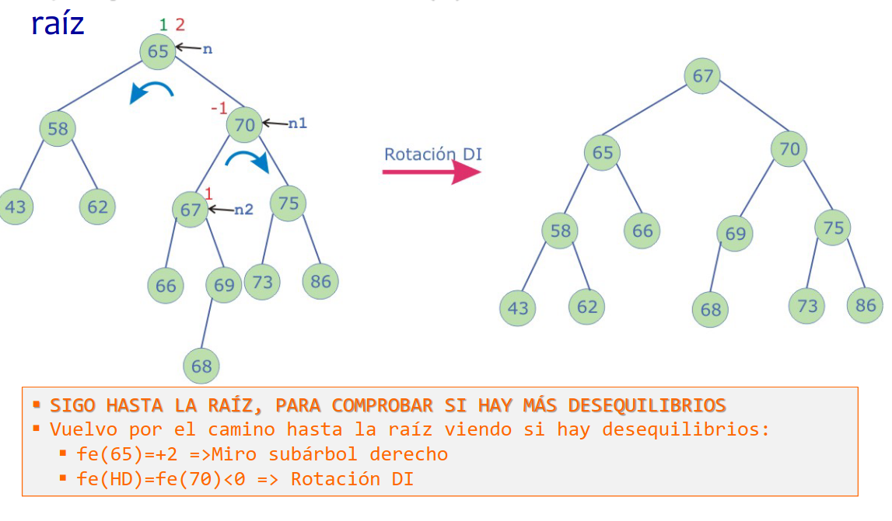